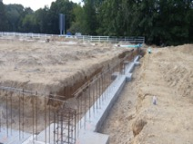
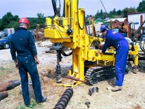
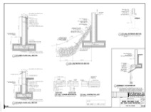

CLA Services
Geotechnical Engineering



CLA Engineers offers a variety of geotechnical engineering services. The most common service sought is sub-surface exploration and a geotechnical report regarding a potential project site. The scope of such geotechnical advisement typically involves exploration of subsurface conditions through borings/test pits, analysis of that data, and the preparation of geotechnical reports, though further testing or design work is occasionally necessary. Our firm has performed extensive design and analysis for a wide variety of projects including single-family dwellings, power facilities, factories, commercial arenas, metal buildings, recycling centers, et cetera. Our office has performed extensive field review of existing structures in order to determine structural/geotechnical integrity, as well as soil inspection during construction for conformance to geotechnical advisement.
- Sub-surface Analysis & Geotechnical Reports
- V & Coastal A Zone Foundation Design (Hydrodynamic Foundation Design)
- Hydrostatic Foundation Design
- Specialized Foundation Design (thrust / tension / vibration)
- Revetment Design
- Slope Stabilization
- Retaining Wall Design
- Earth Shoring Design
- Soil Nailing Design
- Dewatering Design
- Flexible Pavement Design
 For Further information please contact:
For Further information please contact:
Asa Bender, P.E.